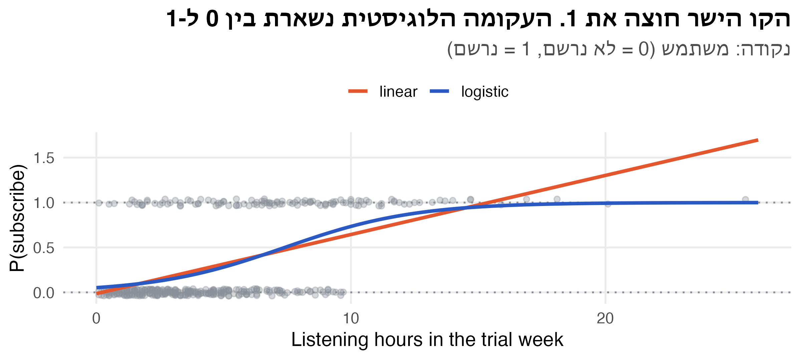

set.seed(1123)
trial <- tibble(hours = round(rgamma(400, shape = 2, scale = 2.5), 1),
first_ai = rbinom(400, 1, 0.4)) |>
mutate(converted = rbinom(n(), 1, plogis(-2.4 + 0.38 * hours - 0.7 * first_ai)),
first_book = factor(ifelse(first_ai == 1, "ai", "human"), levels = c("human", "ai"))) |>
select(hours, first_book, converted)8. רגרסיה לוגיסטית
ניתוח נתונים סטטיסטי · הרצאה 8
ד״ר עדי שריד
2026-11-22
על מה נדבר היום
- רגרסיה לוגיסטית (logistic regression), חלק א: כשהתגובה היא כן או לא
- סיכוי (odds), logit והמודל הלוגיסטי
- יחס סיכויים (odds ratio) ופירוש המקדמים
- אמידה בנראות מקסימלית, הפלט של
glm()ומבחן deviance
- רגרסיה לוגיסטית, חלק ב: כמה משתנים מסבירים, מבחן חלקי וסיווג
רגרסיה לוגיסטית (Logistic regression)
השאלה: מי יהפוך למנוי?
ליסנה, חנות ספרי השמע מהתרגיל המסכם בהרצאה הקודמת, השיקה. כל משתמש חדש מקבל שבוע ניסיון חינם, ובסופו מחליט אם להירשם למנוי בתשלום.
השאלה העסקית: האם כמות ההאזנה בשבוע הניסיון מנבאת הרשמה? אם כן, אפשר לזהות מוקדם משתמשים “בסיכון”, ולשלוח להם תזכורת או המלצה.
- התגובה: \(Y_i = 1\) אם המשתמש נרשם, \(Y_i = 0\) אם לא. משתנה בינארי
- המשתנה המסביר: \(x_i\) = שעות האזנה בשבוע הניסיון
- המטרה: לאמוד את \(p(x) = P(Y = 1 \mid x)\), הסיכוי להירשם כפונקציה של שעות ההאזנה
400 משתמשי ניסיון, מתוכם 121 (30%) נרשמו.
למה לא רגרסיה לינארית?

- חיזוי מחוץ ל-\([0, 1]\): הקו הישר צופה “הסתברות” של 1.66 למשתמש שהאזין 25 שעות
- השונות לא קבועה: \(\text{Var}(Y \mid x) = p(x)(1 - p(x))\). היא תלויה ב-\(x\), בניגוד להנחה של רגרסיה לינארית
- השגיאות לא נורמליות: \(Y\) מקבל רק 0 או 1, ולכן גם השארית מקבלת רק שני ערכים לכל \(x\)
סיכוי (Odds) ו-logit
הסיכוי (odds): היחס בין ההסתברות להצלחה להסתברות לכישלון.
\[ \text{odds} = \frac{p}{1 - p} \qquad\qquad \text{logit}(p) = \ln\frac{p}{1 - p} \]
| \(p\) | 0.1 | 0.2 | 0.5 | 0.8 | 0.9 |
|---|---|---|---|---|---|
| odds | 0.11 | 0.25 (“1 ל-4”) | 1 | 4 (“4 ל-1”) | 9 |
| logit | −2.20 | −1.39 | 0 | 1.39 | 2.20 |
- \(p\) חסום בין 0 ל-1. ה-odds בין 0 לאינסוף. ה-logit בין מינוס אינסוף לאינסוף
- לכן את ה-logit אפשר למדל בפונקציה לינארית בלי לחשוש מחיזוי לא חוקי
- סימטריה: \(\text{logit}(1 - p) = -\text{logit}(p)\)
המודל
\[ Y_i \sim \text{Bernoulli}(p_i), \qquad \text{logit}(p_i) = \ln\frac{p_i}{1 - p_i} = \beta_0 + \beta_1 x_i \]
ובכיוון ההפוך, הפונקציה הלוגיסטית (sigmoid):
\[ p_i = \frac{e^{\beta_0 + \beta_1 x_i}}{1 + e^{\beta_0 + \beta_1 x_i}} = \frac{1}{1 + e^{-(\beta_0 + \beta_1 x_i)}} \]
- אין איבר שגיאה נורמלי. האקראיות היא של משתנה ברנולי: בהינתן \(p_i\), המשתמש נרשם או לא
- הקשר בין \(x\) ל-\(p\) לא לינארי: הוא לינארי רק בסולם ה-logit
- עם כמה משתנים מסבירים: \(\text{logit}(p_i) = \beta_0 + \beta_1 x_{i1} + \dots + \beta_k x_{ik}\). כמו ברגרסיה מרובה
איך \(\beta_0\) ו-\(\beta_1\) קובעים את העקומה

- כיוון: כש-\(\beta_1\) חיובי, ההסתברות עולה עם \(x\). כשהוא שלילי, היא יורדת (העקומה הסגולה)
- תלילות: ככל שהערך המוחלט של \(\beta_1\) גדול יותר, המעבר חד יותר (הירוקה והכתומה מול הכחולה)
- מיקום: ההסתברות שווה לחצי כשהביטוי \(\beta_0 + \beta_1 x\) מתאפס, כלומר בנקודה \(x_{50} = -\beta_0 / \beta_1\)
- השיפוע בנקודה הזו הוא \(\beta_1 / 4\). זה השינוי המקסימלי בהסתברות לכל יחידה של \(x\)
תרגיל: מציאת המקדמים משתי נקודות
מנתונים קודמים ידוע: משתמש שהאזין 2 שעות נרשם בהסתברות 20%, ומשתמש שהאזין 10 שעות נרשם בהסתברות 80%.
- מצאו את \(\beta_0\) ו-\(\beta_1\) של מודל לוגיסטי שעובר בשתי הנקודות
- מה ההסתברות להירשם אחרי 12 שעות?
- כמה שעות צריך להאזין כדי שההסתברות תהיה לפחות 90%?
הרמז: בסולם ה-logit המודל לינארי. שתי נקודות, שני נעלמים.
פתרון
1. \(\text{logit}(0.2) = \ln\frac{0.2}{0.8} = -1.386\), \(\text{logit}(0.8) = 1.386\):
\[ \begin{cases} \beta_0 + 2\beta_1 = -1.386 \\ \beta_0 + 10\beta_1 = 1.386 \end{cases} \quad\Rightarrow\quad \beta_1 = \frac{1.386 - (-1.386)}{10 - 2} = 0.347, \qquad \beta_0 = -1.386 - 2 \cdot 0.347 = -2.079 \]
2. \(\text{logit} = -2.079 + 0.347 \cdot 12 = 2.079\), ולכן \(p = \dfrac{1}{1 + e^{-2.079}} = 0.889\)
3. \(\text{logit}(0.9) = \ln 9 = 2.197\). צריך \(-2.079 + 0.347x \ge 2.197\), כלומר \(x \ge 12.3\) שעות
פירוש המקדם: יחס סיכויים (Odds ratio)
מה קורה ל-odds כש-\(x\) עולה ביחידה אחת?
\[ \frac{\text{odds}(x + 1)}{\text{odds}(x)} = \frac{e^{\beta_0 + \beta_1 (x+1)}}{e^{\beta_0 + \beta_1 x}} = e^{\beta_1} \]
- \(e^{\beta_1}\) הוא יחס הסיכויים (odds ratio, OR): כל שעת האזנה נוספת מכפילה את ה-odds ב-\(e^{\beta_1}\), בלי קשר לנקודת ההתחלה
- בתרגיל: \(e^{0.347} = 1.41\). כל שעה מגדילה את ה-odds ב-41%
- ה-odds עולה ב-41%, לא ההסתברות. השינוי בהסתברות תלוי בנקודת ההתחלה:
| שעות | 0 → 1 | 5 → 6 | 12 → 13 |
|---|---|---|---|
| \(p\) | 0.111 → 0.150 | 0.414 → 0.500 | 0.889 → 0.919 |
| השינוי בהסתברות | +0.039 | +0.086 | +0.030 |
משתנה מסביר בינארי: טבלת 2×2
האם הספר הראשון ששמעו (קריין אנושי או קול סינתטי) קשור להרשמה?
converted
first_book 0 1
human 151 85
ai 128 36ביד: \(\text{odds}_{human} = \frac{85}{151} = 0.563\), \(\text{odds}_{ai} = \frac{36}{128} = 0.281\), \(\quad OR = \frac{0.281}{0.563} = 0.500\)
(Intercept) first_bookai
-0.5746 -0.6939 (Intercept) first_bookai
0.5629 0.4996 - \(e^{\hat\beta_0}\) = ה-odds בקבוצת הבסיס (אנושי). \(e^{\hat\beta_1}\) = יחס הסיכויים, בדיוק החישוב הידני
- מי שהתחיל בקול סינתטי: ה-odds שלו להירשם כחצי. זה מתיישב עם התרגיל המסכם בהרצאה הקודמת
אמידה: נראות מקסימלית
אין ריבועים פחותים. מחפשים את המקדמים שעבורם הנתונים שראינו הכי סבירים (maximum likelihood):
\[ L(\beta_0, \beta_1) = \prod_{i=1}^{n} p_i^{\,y_i}(1 - p_i)^{1 - y_i} \qquad \ell = \ln L = \sum_{i=1}^{n}\left[y_i \ln p_i + (1 - y_i)\ln(1 - p_i)\right] \]
- כל משתמש שנרשם (\(y_i = 1\)) תורם \(p_i\), וכל מי שלא נרשם תורם \(1 - p_i\). רוצים \(p_i\) גבוה למי שנרשם ונמוך למי שלא
- המקדמים “מסתתרים” בתוך \(p_i\). כדי לגזור, מציבים את המודל: \(\;p_i = \dfrac{e^{\beta_0 + \beta_1 x_i}}{1 + e^{\beta_0 + \beta_1 x_i}}\)
הנגזרות: איפה המקדמים?
צעד 1: מציבים את \(p_i\) ב-\(\ell\). משתמשים ב-\(\ln\frac{p_i}{1 - p_i} = \beta_0 + \beta_1 x_i\) וב-\(1 - p_i = \frac{1}{1 + e^{\beta_0 + \beta_1 x_i}}\):
\[ \ell = \sum_i\left[y_i \ln\frac{p_i}{1 - p_i} + \ln(1 - p_i)\right] = \sum_i\left[y_i(\beta_0 + \beta_1 x_i) - \ln\left(1 + e^{\beta_0 + \beta_1 x_i}\right)\right] \]
צעד 2: גוזרים. הנגזרת של \(\ln(1 + e^{\beta_0 + \beta_1 x_i})\) לפי \(\beta_0\) היא \(\frac{e^{\beta_0 + \beta_1 x_i}}{1 + e^{\beta_0 + \beta_1 x_i}} = p_i\), ולפי \(\beta_1\) היא \(x_i p_i\):
\[ \frac{\partial \ell}{\partial \beta_0} = \sum_i \left[y_i - \frac{e^{\beta_0 + \beta_1 x_i}}{1 + e^{\beta_0 + \beta_1 x_i}}\right] = \sum_i (y_i - p_i) \qquad \frac{\partial \ell}{\partial \beta_1} = \sum_i x_i\left[y_i - \frac{e^{\beta_0 + \beta_1 x_i}}{1 + e^{\beta_0 + \beta_1 x_i}}\right] = \sum_i x_i (y_i - p_i) \]
צעד 3: משווים לאפס. שתי משוואות בשני נעלמים:
\[ \sum_i y_i = \sum_i \frac{1}{1 + e^{-(\beta_0 + \beta_1 x_i)}} \qquad\qquad \sum_i x_i y_i = \sum_i \frac{x_i}{1 + e^{-(\beta_0 + \beta_1 x_i)}} \]
- אין פתרון סגור: המקדמים נמצאים בתוך מעריך, בתוך שבר, בתוך סכום. אי אפשר לבודד אותם כמו בריבועים פחותים. פותרים בשיטה איטרטיבית, Newton–Raphson. ב-R זה
Number of Fisher Scoring iterationsבפלט - פירוש המשוואה הראשונה: סכום ההסתברויות החזויות שווה למספר המצטרפים בפועל. בנתונים שלנו הסכום הוא 121.0, ובפועל הצטרפו 121 משתמשים (בודקים ב-R עם
sum(fitted(fit_h)))
ב-R: glm()
Call:
glm(formula = converted ~ hours, family = binomial, data = trial)
Coefficients:
Estimate Std. Error z value Pr(>|z|)
(Intercept) -2.8921 0.2782 -10.40 <2e-16 ***
hours 0.3908 0.0452 8.65 <2e-16 ***
---
Signif. codes: 0 '***' 0.001 '**' 0.01 '*' 0.05 '.' 0.1 ' ' 1
(Dispersion parameter for binomial family taken to be 1)
Null deviance: 490.37 on 399 degrees of freedom
Residual deviance: 379.38 on 398 degrees of freedom
AIC: 383.4
Number of Fisher Scoring iterations: 4איך קוראים את הפלט
hours, \(\hat\beta_1 = 0.391\): כל שעה מעלה את ה-logit ב-0.391. יחס הסיכויים: \(e^{0.391} = 1.48\), כל שעה מגדילה את ה-odds ב-48%z value=Estimate / Std. Error: מבחן Wald. תחת \(H_0: \beta_1 = 0\), \(z \sim N(0, 1)\) בקירוב. כאן \(z = 8.65\)- החציון: \(x_{50} = 2.892 / 0.391 = 7.4\) שעות. מתחת לזה, רוב המשתמשים לא נרשמים
- רווח סמך ל-OR: קודם ל-\(\beta_1\), ואז \(e^{(\cdot)}\) על שני הקצוות:
\[ e^{0.3908 \pm 1.96 \cdot 0.0452} = [1.35,\ 1.61] \]
Null deviance,Residual deviance,AIC: על אלה בשקף הבא
Deviance ומבחן למובהקות המודל
Deviance: \(D = -2\ell(\hat{\boldsymbol\beta})\), כש-\(\ell\) היא הלוג-נראות במקסימום. ככל שהמודל מתאים יותר, \(D\) קטן יותר. זה המקביל של \(SS_E\).
| מודל | מה יש בו | Deviance | df |
|---|---|---|---|
| מודל האפס (null) | רק \(\beta_0\): אותה הסתברות לכולם | \(D_0 = 490.37\) | \(n - 1 = 399\) |
| המודל שלנו | \(\beta_0 + \beta_1 x\) | \(D_1 = 379.38\) | \(n - 2 = 398\) |
מבחן יחס הנראות (likelihood ratio test) ל-\(H_0: \beta_1 = \dots = \beta_k = 0\):
\[ G = D_0 - D_1 = 490.37 - 379.38 = 111.00 \;\sim\; \chi^2_k \text{ תחת } H_0 \]
- \(k = 1\) (מספר המשתנים המסבירים). \(\chi^2_{0.95;\,1} = 3.84\), ו-\(G = 111.0\) גדול בהרבה: המודל מובהק
- זה המקביל של מבחן F לכל המודל ברגרסיה לינארית
AIC\(= D_1 + 2(k + 1) = 379.38 + 4 = 383.4\): להשוואה בין מודלים. נמוך יותר = טוב יותר
אותו מבחן ב-R
Analysis of Deviance Table
Model: binomial, link: logit
Response: converted
Terms added sequentially (first to last)
Df Deviance Resid. Df Resid. Dev Pr(>Chi)
NULL 399 490
hours 1 111 398 379 <2e-16 ***
---
Signif. codes: 0 '***' 0.001 '**' 0.01 '*' 0.05 '.' 0.1 ' ' 1 G chi2_crit
110.997 3.841 - שורת
hours: העמודהDevianceהיא \(G\), הירידה ב-deviance כשמוסיפים את המשתנה.Resid. Devהוא \(D\) אחרי ההוספה - כמו
anova()של מודל לינארי, גם כאן המשתנים נכנסים לפי הסדר בנוסחה. עם כמה משתנים, כל שורה בודקת את התרומה של המשתנה בנוסחה אחרי הקודמים. נשתמש בזה בחלק ב למבחן חלקי
חיזוי: מי בסיכון?
1 2 3 4
0.108 0.281 0.558 0.858 type = "response"מחזיר הסתברות. בלי זה,predict()מחזיר את ה-logit- ביד, למשתמש שהאזין 5 שעות: \(\text{logit} = -2.892 + 0.391 \cdot 5 = -0.938\), ולכן \(p = \frac{1}{1 + e^{0.938}} = 0.281\)
- ההחלטה העסקית: משתמש שהאזין עד 5 שעות נרשם בסיכוי של פחות מ-30%. הוא מועמד לתזכורת או להמלצה אישית. אבל זהירות: גם כאן אלה נתוני תצפית. משתמש שמאזין הרבה כנראה אוהב ספרי שמע מלכתחילה. כדי לדעת אם תזכורת גורמת להרשמה, צריך ניסוי
בחלק ב
- כמה משתנים מסבירים: שעות האזנה וגם סוג הספר הראשון. פירוש של OR “כשהשאר קבוע”
- מבחן deviance חלקי: האם משתנה אחד תורם, בנוכחות האחרים. המקביל של מבחן F חלקי
- סיווג: מהסתברות להחלטה. סף, מטריצת בלבול (confusion matrix), רגישות וסגוליות
- מה יכול להשתבש: הפרדה מלאה (separation), אירועים נדירים, ובלבול בין odds להסתברות
סיכום
מה לקחת מההרצאה
| השאלה | הכלי | ב-R |
|---|---|---|
| תגובה בינארית | \(\text{logit}(p) = \beta_0 + \beta_1 x\), \(OR = e^{\beta_1}\) | glm(y ~ x, family = binomial) |
| מה המשמעות של המקדם? | \(e^{\beta_1}\) מכפיל את ה-odds, לא את ההסתברות | exp(coef(fit)) |
| האם המודל הלוגיסטי מובהק? | \(G = D_0 - D_1 \sim \chi^2_k\) | anova(fit, test = "Chisq") |
| מה ההסתברות למשתמש חדש? | \(p = 1 / (1 + e^{-(\hat\beta_0 + \hat\beta_1 x)})\) | predict(fit, type = "response") |
ניתוח נתונים סטטיסטי · תשפ״ז